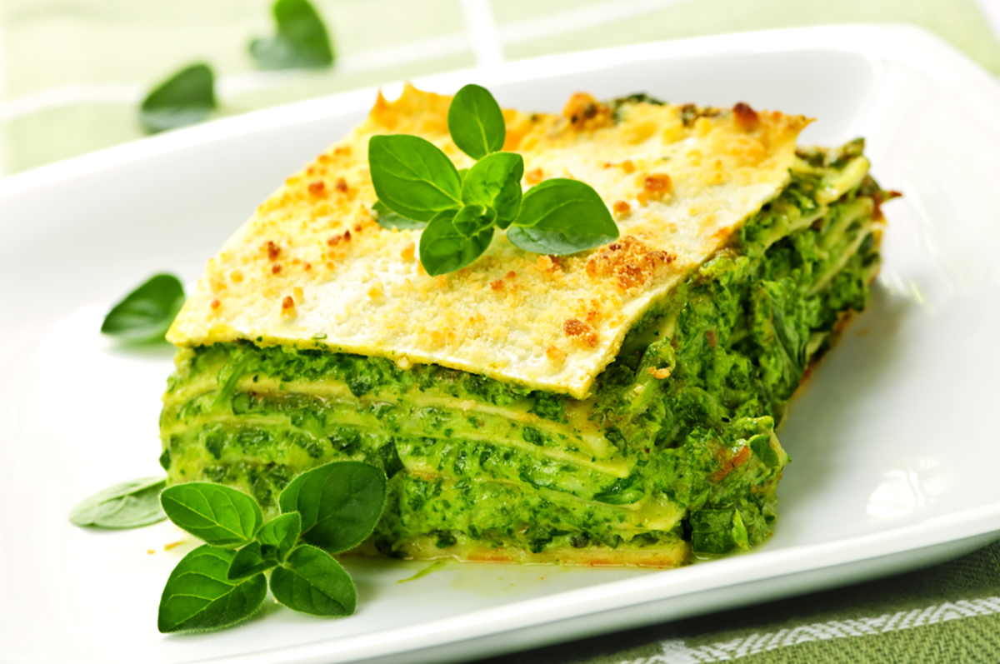

Pesto Lasagna ("Lasagne al Pesto Genovese")
Description
This lasagne al Pesto Genovese recipe hails from Liguria and contains layers of pasta, homemade basil pesto and a creamy béchamel sauce. Topped with extra Parmesan and some pine nuts for crunch, it's the ultimate in comfort food. Use a vegetarian Parmesan substitute to easily make the dish vegetarian.
Ingredients:
- 6 fresh lasagne sheets
- 20g of Parmesan, finely grated
- 20g of pine nuts, for the topping
Pesto alla Genovese
- 50g of pine nuts
- 1 garlic clove, crushed
- 40g of Parmesan, finely grated
- 100g of basil
- 150ml of olive oil
- salt
Béchamel
- 50g of flour
- 50g of unsalted butter
- 750ml of whole milk, warmed
- freshly grated nutmeg
- salt
Method:
- Begin by making the pesto. Toast the pine nuts in a hot dry pan until lightly golden and shiny from the natural oils. This should take a few minutes - don't let them burn otherwise they'll taste bitter
- Add the nuts to a blender along with the Parmesan, garlic, basil, oil and blend to a rough paste (you could also do this in a pestle and mortar). Set aside
- Next, make the béchamel. Heat the butter and flour in a pan and stir to create a paste (this is called a roux). Cook out the roux for a minute or so to avoid a floury taste in your sauce
- Pour in the warm milk, slowly, whisking continuously to avoid lumps. The bechamel will start to thicken up after a few minutes. Taste and season with nutmeg
- Preheat an oven to 180°C/gas mark 4 whilst you assemble the lasagne
- Choose an ovenproof dish which fits the lasagne sheets (or trim the sheets accordingly). Cover the base with pasta, followed by pesto, then bechamel, repeating this pattern until everything is used up and there is a layer of bechamel on the top.
- Once layered, sprinkle the top with finely grated Parmesan and some pine nuts. Transfer to the oven and bake for 30 minutes until golden on top, then serve!